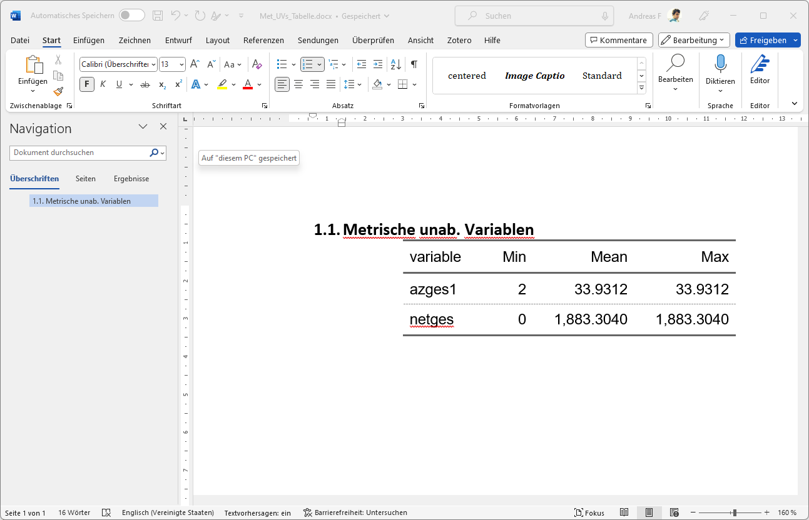
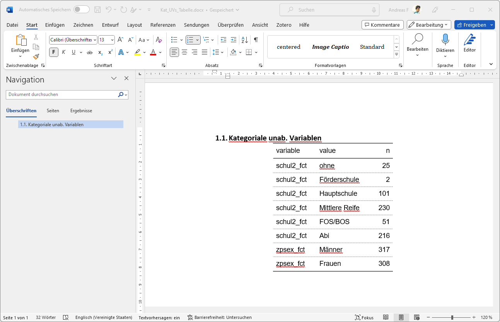
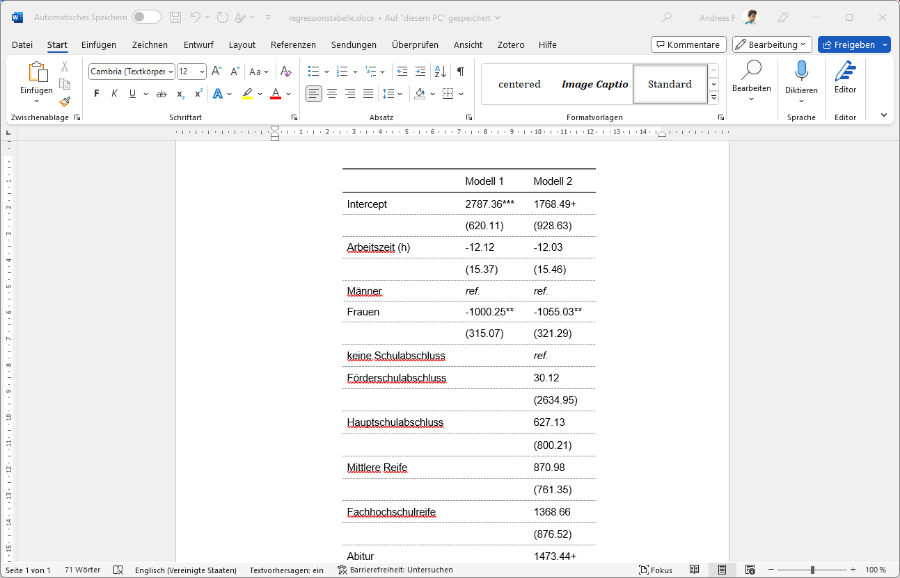
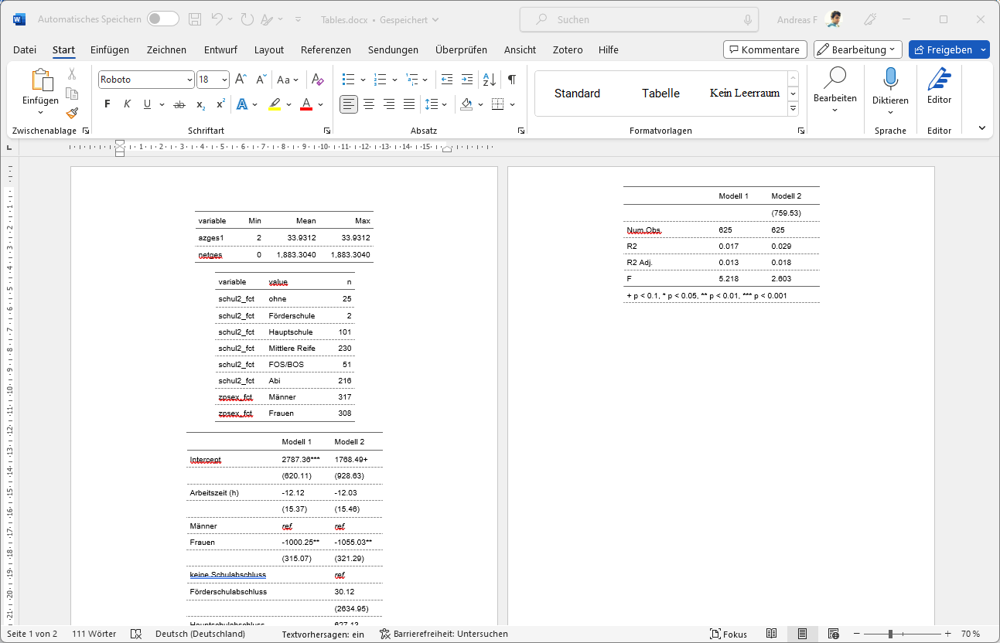

library(tidyverse) # für die Datenvorbereitung
library(modelsummary) # Tabellen vorbereiten
library(janitor) # kreuztabellen
library(flextable) # Formatierung der Tabelle für Word
library(officer) # eigentlicher Word-Export9 Tabellenexport
Eure Zeit ist zu wertvoll, um Tabellen per Hand zu erstellen!
Diese Pakete werden gebraucht, alle sind mit dem entsprechenden install.packages("") installierbar:
Zu diesen Variablen sollen folgende deskriptiven Übersichtstabellen erstellt und als Word-Dokument exportiert werden:
| var | . |
|---|---|
| zpsex | Steuervariable: Geschlecht des Befragten (aus HHgrid) |
| schul2 | Hoechster Schulabschluss, mit ausl. Abschl. und offenen Angaben |
| netges | Akt. Nettoeinkommen insgesamt (ohne Minijobs, inkl. kat. Ang.), gen. |
| azges1 | Akt. vertragl. Arb.zeit insgesamt (ohne Minijobs), gen. |
Wir starten mit einem Ausschnitt des PASS CF:
pend14 <- haven::read_dta("./orig/PENDDAT_cf_W13.dta",col_select = c("pnr","welle","netges","azges1","zpsex","schul2")) %>%
filter(welle == 13,schul2 > 1) %>%
mutate(across(everything(),~ifelse(.x<0, NA, .x))) %>%
na.omit() # alle Zeilen mit (mind.) 1 NA löschen9.1 {flextable}
Mit dem Paket {flextable} können wir data.frames als Tabelle in eine Word-Datei exportieren, {officer} erweiteret diese Funktionen speziell für den Export in Word:
install.packages("flextable")
library(flextable)
install.packages("officer")
library(officer)df1 <- data.frame(x1= c(2,2), y1 = c(0,1))
df1 x1 y1
1 2 0
2 2 1{flextable} stellt uns eine Reihe an Funktionen zur Formatierung zur Verfügung, um die Darstellung des data.frame zu anzupassen:
flextable(df1) %>%
border_remove() %>%
hline_top(border = fp_border(color = "orange")) %>%
hline(i=1,border = fp_border(color = "blue",style = "dotted")) %>%
set_header_labels(x1 = "Anderes Label") %>%
add_header_row(values = c("Überschrift",""),colwidths = c(1,1)) %>%
autofit()Überschrift | |
|---|---|
Anderes Label | y1 |
2 | 0 |
2 | 1 |
Hier finden sich weitere Infos zu flextable, u.a. können bspw. die Trennlinien dünner gemacht werden oder eine andere Farbe angegeben werden. Hier finden sich alle vefügbaren Funktionen.
9.2 Deskription
9.2.1 Verteilungstabellen für metrische Variablen
Für die metrischen Merkmale kennen wir ja das summary():
summary(pend14$netges) Min. 1st Qu. Median Mean 3rd Qu. Max.
0 1080 1600 1883 2160 88453 summary(pend14$azges1) Min. 1st Qu. Median Mean 3rd Qu. Max.
2.00 27.00 36.00 33.93 40.00 90.00 Eine einfach Möglichkeit, diese summary() untereinander anzuordnen, ist summarise in Kombination mit pivot_longer() zu verwenden:
pend14 %>%
select(azges1,netges) %>%
pivot_longer(cols = everything(), names_to = "variable") %>%
group_by(variable) %>%
summarise(min = min(value,na.rm = T),
mean = mean(value,na.rm = T),
max = max(value,na.rm = T))# A tibble: 2 × 4
variable min mean max
<chr> <dbl> <dbl> <dbl>
1 azges1 2 33.9 90
2 netges 0 1883. 88453pend14 %>%
select(azges1,netges) %>%
pivot_longer(cols = everything(), names_to = "variable") %>%
group_by(variable) %>%
summarise(Min = min(value,na.rm = T),
Mean = mean(value,na.rm = T),
Max = mean(value,na.rm = T)) %>%
flextable()variable | Min | Mean | Max |
|---|---|---|---|
azges1 | 2 | 33.9312 | 33.9312 |
netges | 0 | 1,883.3040 | 1,883.3040 |
met_ft <-
pend14 %>%
select(azges1,netges) %>%
pivot_longer(cols = everything(), names_to = "variable") %>%
group_by(variable) %>%
summarise(Min = min(value,na.rm = T),
Mean = mean(value,na.rm = T),
Max = mean(value,na.rm = T)) %>%
flextable() %>%
autofit()Der eigentliche Export ist dann mit save_as_docx, wo wir eine Überschrift und mit path die Zieldatei angeben können:
save_as_docx("Metrische unab. Variablen" = met_ft, path = "./results/Met_UVs_Tabelle.docx")
Aussagekräftigere Variablenbeschriftung mit
rename() & Nachkommastellen
Um den Variablen in der Tabelle aussagekräftigere Namen zu geben, benennen wir sie einfach mit rename() um. Falls wir mehr als ein Wort als Variablenname/späteres Label vergeben wollen, setzen wir die Wörter in '``'.
Mit digits = in colformat_double() können wir die Anzahl der Nachkommastellen setzen:
pend14 %>%
select(`Arbeitszeit umfangreichste Tätigkeit` =azges1,Nettoverdienst=netges) %>%
pivot_longer(cols = everything(), names_to = "variable") %>%
group_by(variable) %>%
summarise(Min = min(value,na.rm = T),
Mean = mean(value,na.rm = T),
Max = mean(value,na.rm = T)) %>%
flextable() %>%
colformat_double(digits = 2) %>%
autofit()variable | Min | Mean | Max |
|---|---|---|---|
Arbeitszeit umfangreichste Tätigkeit | 2.00 | 33.93 | 33.93 |
Nettoverdienst | 0.00 | 1,883.30 | 1,883.30 |
9.2.2 Häufigkeitsauszählungen
pend14 %>%
mutate(schul2_fct = factor(schul2,levels = 2:7, labels = c("ohne","Förderschule","Hauptschule","Mittlere Reife","FOS/BOS","Abi")),
zpsex_fct = factor(zpsex,levels = 1:2,labels =c("Männer","Frauen"))) %>%
select(zpsex_fct,schul2_fct) %>%
pivot_longer(everything(),names_to = "variable") %>%
count(variable,value)# A tibble: 8 × 3
variable value n
<chr> <fct> <int>
1 schul2_fct ohne 25
2 schul2_fct Förderschule 2
3 schul2_fct Hauptschule 101
4 schul2_fct Mittlere Reife 230
5 schul2_fct FOS/BOS 51
6 schul2_fct Abi 216
7 zpsex_fct Männer 317
8 zpsex_fct Frauen 308pend14 %>%
mutate(schul2_fct = factor(schul2,levels = 2:7, labels = c("ohne","Förderschule","Hauptschule","Mittlere Reife","FOS/BOS","Abi")),
zpsex_fct = factor(zpsex,levels = 1:2,labels =c("Männer","Frauen"))) %>%
select(zpsex_fct,schul2_fct) %>%
pivot_longer(everything(),names_to = "variable") %>%
count(variable,value) %>%
flextable()variable | value | n |
|---|---|---|
schul2_fct | ohne | 25 |
schul2_fct | Förderschule | 2 |
schul2_fct | Hauptschule | 101 |
schul2_fct | Mittlere Reife | 230 |
schul2_fct | FOS/BOS | 51 |
schul2_fct | Abi | 216 |
zpsex_fct | Männer | 317 |
zpsex_fct | Frauen | 308 |
kat_ft <-
pend14 %>%
mutate(schul2_fct = factor(schul2,levels = 2:7, labels = c("ohne","Förderschule","Hauptschule","Mittlere Reife","FOS/BOS","Abi")),
zpsex_fct = factor(zpsex,levels = 1:2,labels =c("Männer","Frauen"))) %>%
select(zpsex_fct,schul2_fct) %>%
pivot_longer(everything(),names_to = "variable") %>%
count(variable,value) %>%
flextable() %>% autofit()Für den Export können wir dann wieder save_as_docx() verwenden:
save_as_docx("Kategoriale unab. Variablen" = kat_ft, path = "./results/Kat_UVs_Tabelle.docx")
9.2.3 Übung
9.3 Regressionstabellen
Für Regressionstabellen können wir mit {modelsummary} eine {flextable}-Tabelle erstellen:
pend14_reg_df <-
pend14 %>%
mutate(zpsex_fct = factor(zpsex,levels = 1:2, labels = c("Männer","Frauen")),
schul2_fct = factor(schul2,levels = 2:7, labels = c("ohne","Förderschule","Hauptschule","Mittlere Reife","FOS/BOS","Abi"))) %>%
na.omit()
m1 <- lm(netges ~ azges1 + zpsex_fct, data = pend14_reg_df)
m2 <- lm(netges ~ azges1 + zpsex_fct + schul2_fct, data = pend14_reg_df)
modelsummary(list("Modell 1"=m1,"Modell 2"=m2),
output = "flextable",gof_omit = "IC|Log|RMS",
coef_rename = c("(Intercept)"="Intercept",
"azges1" = "Arbeitszeit (h)",
"zpsex_fctFrauen" = "Frauen",
"schul2_fctFörderschule" = "Förderschulabschluss",
"schul2_fctHauptschule" = "Hauptschulabschluss",
"schul2_fctMittlere Reife" = "Mittlere Reife",
"schul2_fctFOS/BOS" = "Fachhochschulreife",
"schul2_fctAbi" = "Abitur"),
stars = T,fmt =2)
| Modell 1 | Modell 2 |
|---|---|---|
Intercept | 2787.36*** | 1768.49+ |
(620.11) | (928.63) | |
Arbeitszeit (h) | -12.12 | -12.03 |
(15.37) | (15.46) | |
Frauen | -1000.25** | -1055.03** |
(315.07) | (321.29) | |
Förderschulabschluss | 30.12 | |
(2634.95) | ||
Hauptschulabschluss | 627.13 | |
(800.21) | ||
Mittlere Reife | 870.98 | |
(761.35) | ||
Fachhochschulreife | 1368.66 | |
(876.52) | ||
Abitur | 1473.44+ | |
(759.53) | ||
Num.Obs. | 625 | 625 |
R2 | 0.017 | 0.029 |
R2 Adj. | 0.013 | 0.018 |
+ p < 0.1, * p < 0.05, ** p < 0.01, *** p < 0.001 | ||
9.3.1 Referenzkategorien einfügen
Um die Referenzkategorie für kategoriale Variablen kenntlich zu machen, können wir den Hinweis ref. mitaufanzeigen.
Dazu können wir mit Hilfe des Arguments add_rows eine zusätzliche Zeile für die Referenzkategorie der Variable zpsex einfügen. Zunächst erstellen wir einen data.frame, welcher neben den Modellnamen die Koeffizientennamen sowie die einzufügenden Werte enthält. Mit tribble aus dem Paket tibble lässt sich das einfach bewerkstelligen: wir können die Zeilen und Spalten gleich so aufschreiben, wie wir sie haben möchten:
library(tibble)
ref_rows <- tribble( ~ term, ~ "Modell 1", ~ "Modell 2",
"Männer", 'ref.', 'ref.')
attr(ref_rows, 'position') <- 5 # Zeile angeben
modelsummary(
list("Modell 1" = m1, "Modell 2" = m2),
output = "flextable",
gof_omit = "IC|Log|RMS",
coef_rename = c("(Intercept)"="Intercept",
"azges1" = "Arbeitszeit (h)",
"zpsex_fctFrauen" = "Frauen",
"schul2_fctFörderschule" = "Förderschulabschluss",
"schul2_fctHauptschule" = "Hauptschulabschluss",
"schul2_fctMittlere Reife" = "Mittlere Reife",
"schul2_fctFOS/BOS" = "Fachhochschulreife",
"schul2_fctAbi" = "Abitur"),
add_rows = ref_rows,
stars = T,
fmt = 2
) %>% autofit()
| Modell 1 | Modell 2 |
|---|---|---|
Intercept | 2787.36*** | 1768.49+ |
(620.11) | (928.63) | |
Arbeitszeit (h) | -12.12 | -12.03 |
(15.37) | (15.46) | |
Männer | ref. | ref. |
Frauen | -1000.25** | -1055.03** |
(315.07) | (321.29) | |
Förderschulabschluss | 30.12 | |
(2634.95) | ||
Hauptschulabschluss | 627.13 | |
(800.21) | ||
Mittlere Reife | 870.98 | |
(761.35) | ||
Fachhochschulreife | 1368.66 | |
(876.52) | ||
Abitur | 1473.44+ | |
(759.53) | ||
Num.Obs. | 625 | 625 |
R2 | 0.017 | 0.029 |
R2 Adj. | 0.013 | 0.018 |
+ p < 0.1, * p < 0.05, ** p < 0.01, *** p < 0.001 | ||
Das funktioniert auch für mehrere Referenzkategorien:
ref_rows2 <- tribble(~term, ~"Modell 1", ~"Modell 2",
"Männer", 'ref.', 'ref.',
"keine Schulabschluss", '', 'ref.',
)
attr(ref_rows2, 'position') <- c(5,8) # Zeile angeben
modelsummary(
list("Modell 1" = m1, "Modell 2" = m2),
output = "flextable",
gof_omit = "IC|Log|RMS",
coef_rename = c("(Intercept)"="Intercept",
"azges1" = "Arbeitszeit (h)",
"zpsex_fctFrauen" = "Frauen",
"schul2_fctFörderschule" = "Förderschulabschluss",
"schul2_fctHauptschule" = "Hauptschulabschluss",
"schul2_fctMittlere Reife" = "Mittlere Reife",
"schul2_fctFOS/BOS" = "Fachhochschulreife",
"schul2_fctAbi" = "Abitur"),
add_rows = ref_rows2,
stars = T,
fmt = 2
)
| Modell 1 | Modell 2 |
|---|---|---|
Intercept | 2787.36*** | 1768.49+ |
(620.11) | (928.63) | |
Arbeitszeit (h) | -12.12 | -12.03 |
(15.37) | (15.46) | |
Männer | ref. | ref. |
Frauen | -1000.25** | -1055.03** |
(315.07) | (321.29) | |
keine Schulabschluss | ref. | |
Förderschulabschluss | 30.12 | |
(2634.95) | ||
Hauptschulabschluss | 627.13 | |
(800.21) | ||
Mittlere Reife | 870.98 | |
(761.35) | ||
Fachhochschulreife | 1368.66 | |
(876.52) | ||
Abitur | 1473.44+ | |
(759.53) | ||
Num.Obs. | 625 | 625 |
R2 | 0.017 | 0.029 |
R2 Adj. | 0.013 | 0.018 |
+ p < 0.1, * p < 0.05, ** p < 0.01, *** p < 0.001 | ||
Tipparbeit beim Umbenennen sparen mit
coef_rename =
Mit Hilfe der Option coef_rename = und einer function() können wir die Variablenumbenennung auch automatisieren. Mehr dazu hier Dazu erstellen wir eine Funktion erstellen, welche bspw. mit gsub() Variablennamen durch die gewünschte Beschriftung ersetzt:
rename_function <- function(old_names) {
new_names <-
gsub("schul2_fct", "", old_names) %>%
gsub("zpsex_fct", "",.) %>%
gsub("azges1", "Arbeitszeit (h) ",.)
return(setNames(new_names, old_names))
}
## diese Funktion dann in modelsummary verwenden:
modelsummary(list("Modell 1" = m1, "Modell 2" = m2),
output = "flextable",gof_omit = "IC|Log|RMS",
coef_rename = rename_function) # function anwenden
| Modell 1 | Modell 2 |
|---|---|---|
(Intercept) | 2787.356 | 1768.486 |
(620.109) | (928.625) | |
Arbeitszeit (h) | -12.117 | -12.028 |
(15.373) | (15.458) | |
Frauen | -1000.250 | -1055.027 |
(315.071) | (321.292) | |
Förderschule | 30.121 | |
(2634.951) | ||
Hauptschule | 627.133 | |
(800.213) | ||
Mittlere Reife | 870.982 | |
(761.353) | ||
FOS/BOS | 1368.659 | |
(876.515) | ||
Abi | 1473.443 | |
(759.534) | ||
Num.Obs. | 625 | 625 |
R2 | 0.017 | 0.029 |
R2 Adj. | 0.013 | 0.018 |
Auf den mit {modelsummary} erstellten flextable können wir natürlich auch alle Funktionen für flextable anwenden und dann mit save_as_docx() die Tabelle exportieren:
regtab2 <-
modelsummary(
list("Modell 1" = m1, "Modell 2" = m2),
output = "flextable",
gof_omit = "IC|Log|RMS",
coef_rename = c("(Intercept)"="Intercept",
"azges1" = "Arbeitszeit (h)",
"zpsex_fctFrauen" = "Frauen",
"schul2_fctFörderschule" = "Förderschulabschluss",
"schul2_fctHauptschule" = "Hauptschulabschluss",
"schul2_fctMittlere Reife" = "Mittlere Reife",
"schul2_fctFOS/BOS" = "Fachhochschulreife",
"schul2_fctAbi" = "Abitur"),
add_rows = ref_rows2,
stars = T,
fmt = 2) %>%
autofit() %>%
italic(i = ~ `Modell 2` == "ref.",j =2:3)save_as_docx(regtab2,path = "./results/regressionstabelle.docx")
9.4 Alle Tabellen in eine Datei mit {officer}
Um die Tabellen in Dokument gemeinsames Dokument zu exportieren, ist das Paket officer eine große Hilfe. Mehr Infos hier.
library(officer)Zunnächst lesen wir mit read_docx() eine Vorlage ein, welche Einstellungen für das Word-Dokument enthält (Seitenformat,..) und fügen dann mit body_add_flextable() die Tabellen ein. Mit body_add_par(.,"") können wir leere Absätze einfügen.
read_docx("Word_Vorlage.docx") %>%
body_add_par(value = "Metrische Variablen",style = "heading 1") %>%
body_add_flextable(., value = met_ft ) %>% # flextable met_ft einfügen
body_add_par(.,"") %>% # leeren Absatz einfügen
body_add_par(value = "Kategoriale Variablen",style = "heading 1") %>%
body_add_flextable(., value = kat_ft ) %>% # flextable cat_ft einfügen
body_add_par(.,"") %>% # leeren Absatz einfügen
body_add_flextable(., value = regtab2 ) %>% # flextable regtab2 einfügen
print(target = "./results/Tables.docx")
9.5 Übung
9.5.1 Übung
pend_ue14 <-
haven::read_dta("./orig/PENDDAT_cf_W13.dta",col_select = c("famstand","azges1","palter","schul2"))%>%
filter(palter > 0, famstand > 0 , azges1>0, schul2 > 1) %>%
mutate(famstand_fct = factor(famstand,levels = 1:5,labels = c("Ledig","Verheiratet", "Verheiratet getr. lebd.", "Geschieden", "Verwitwet")),
schul2_fct = factor(schul2, levels = 2:7, labels = c("ohne","Förderschule","Hauptschule","Mittlere Reife","FOS/BOS","Abi"))) - Erstellen Sie eine Übersicht für die Variablen
zpalter(Alter) undazges1(Arbeitszeit) und exportieren Sie diese in eine Word-Datei. Verwenden Sie den obigen Einlesebefehl - dann sind die Missings bereits ausgeschlossen,- Erstellen Sie zunächst einen
data.framemit min, mean und max der beiden Variablen. - Formatieren Sie diesen
data.framedann alsflextable - Speichern Sie diesen mit
save_as_docx()
- Erstellen Sie zunächst einen
- Erstellen Sie eine Übersichtstabelle zu
famstand_fct(Familienstand) undschul2_fct(Ausbildung).- Die Labels sind bereits im obigen Einlesebefehl gesetzt.
9.5.2 Übung
- Erstellen sie folgende Regressionsmodelle und erstellen Sie mit
{modelsummary}eine Regressiontabelle:
m1 <- lm(azges1 ~ schul2_fct, data = pend_ue14)
m2 <- lm(azges1 ~ schul2_fct + zpalter, data = pend_ue14)9.6 Latex
{kableExtra} ist mein Favorit für Tabellen in pdf Outputs.
9.6.1 Verteilungstabellen für metrische Variablen
library(kableExtra)
met_kbl <-
pend14 %>%
select(azges1,netges) %>%
pivot_longer(cols = everything(), names_to = "variable") %>%
group_by(variable) %>%
summarise(Min = min(value,na.rm = T),
Mean = mean(value,na.rm = T),
Max = mean(value,na.rm = T)) %>%
kbl(., booktabs = T, format = 'latex') %>% # ab hier spezifisch für latex
kable_styling(latex_options = "striped")
write(met_kbl,file = "./results/desc1.tex")9.6.2 Häufigkeitsauszählungen
kat_kbl <-
pend14 %>%
select(zpsex,schul2) %>%
mutate(zpsex = factor(zpsex,levels = 1:2, labels = c("Männer","Frauen")),
schul2 = factor(schul2, levels = 2:7, labels = c("ohne","Förderschule","Hauptschule","Mittlere Reife","FOS/BOS","Abi"))) %>%
pivot_longer(everything(),names_to = "variable") %>%
count(variable,value) %>%
kbl(., booktabs = T, format = 'latex') %>% # ab hier latex-syntax
kable_styling(latex_options = "striped", stripe_index = c(1,2))
write(kat_kbl,file = "./results/crosstab1.tex")9.6.3 Regressionstabelle mit {modelsummary}
m1 <- lm(netges ~ azges1 + zpsex_fct, data = pend14_reg_df)
m2 <- lm(netges ~ azges1 + zpsex_fct + schul2_fct, data = pend14_reg_df)
ref_rows2 <- tribble(~term, ~"Modell 1", ~"Modell 2",
"Männer", 'ref.', 'ref.',
"keine Ausbildung", '', 'ref.',
)
attr(ref_rows2, 'position') <- c(5,8) # Zeile angeben
modelsummary(
list("Modell 1" = m1, "Modell 2" = m2),
gof_omit = "IC|Log|RMS",
coef_rename = c(
"(Intercept)" = "Intercept",
"zpsexFrauen" = "Frauen",
"schul2dual/schul." = "Duale/Schulische Ausbildung",
"schul2Aufst." = "Aufstiegsfortbildung",
"schul2FH/Uni" = "FH/Uni-Abschluss"
),
add_rows = ref_rows2,
stars = T,
fmt = 2,
output = "./results/modelsummary.tex" ## Latex-Output
)9.7 Anhang
9.7.1 Kreuztabellen
Geschlecht | |||
|---|---|---|---|
Ausbildung | Männer | Frauen | Total |
ohne | 21 | 4 | 25 |
Förderschule | 2 | 0 | 2 |
Hauptschule | 60 | 41 | 101 |
Mittlere Reife | 96 | 134 | 230 |
FOS/BOS | 26 | 25 | 51 |
Abi | 112 | 104 | 216 |
Total | 317 | 308 | 625 |
Hier ist die Herausforderung, einen data.frame() für {flextable} vorzubereiten: table() gibt keinen data.frame aus und meistens ist der long shape Output von count() auch nicht das was wir wollen:
tab1 <- table(pend14$zpsex,pend14$schul2)
class(tab1)[1] "table"pend14 %>%
mutate(zpsex_fct = factor(zpsex,levels = 1:2, labels = c("Männer","Frauen"))) %>% # zahlenwerte in zpsex mit labels überschreiben
mutate(schul2_fct = factor(schul2, levels = 2:7, labels = c("ohne","Förderschule","Hauptschule","Mittlere Reife","FOS/BOS","Abi"))) %>% # auch für schul2
count(zpsex_fct,schul2_fct) # A tibble: 11 × 3
zpsex_fct schul2_fct n
<fct> <fct> <int>
1 Männer ohne 21
2 Männer Förderschule 2
3 Männer Hauptschule 60
4 Männer Mittlere Reife 96
5 Männer FOS/BOS 26
6 Männer Abi 112
7 Frauen ohne 4
8 Frauen Hauptschule 41
9 Frauen Mittlere Reife 134
10 Frauen FOS/BOS 25
11 Frauen Abi 104tabyl() aus {janitor} hilft hier weiter:
library(janitor)
pend14 %>%
mutate(zpsex_fct = factor(zpsex,levels = 1:2, labels = c("Männer","Frauen"))) %>% # zahlenwerte in zpsex mit labels überschreiben
mutate(schul2_fct = factor(schul2, levels = 2:7, labels = c("ohne","Förderschule","Hauptschule","Mittlere Reife","FOS/BOS","Abi"))) %>% # auch für schul2
tabyl(schul2_fct,zpsex_fct) %>%
adorn_totals(where = c("row","col")) schul2_fct Männer Frauen Total
ohne 21 4 25
Förderschule 2 0 2
Hauptschule 60 41 101
Mittlere Reife 96 134 230
FOS/BOS 26 25 51
Abi 112 104 216
Total 317 308 625Übrigens: Mit adorn_percentages() können wir bspw. statt absoluten Häufigkeiten die prozentualen Anteile ausgeben lassen. Weitere adorn_...() Funktionen in der Vignette.
pend14 %>%
mutate(zpsex_fct = factor(zpsex,levels = 1:2, labels = c("Männer","Frauen"))) %>% # zahlenwerte in zpsex mit labels überschreiben
mutate(schul2_fct = factor(schul2, levels = 2:7, labels = c("ohne","Förderschule","Hauptschule","Mittlere Reife","FOS/BOS","Abi"))) %>% # auch für schul2
tabyl(schul2_fct,zpsex_fct) %>%
adorn_totals(where = c("row","col")) %>%
flextable() %>%
border_remove() %>% # linien raus
hline(i=6) %>% # in zeile 4 eine Linie einfügen
hline_top() %>% # linie oben
set_header_labels(schul2_fct = "Ausbildung") %>% # kopf-label links
add_header_row(values = c("","Geschlecht",""),colwidths = c(1,2,1)) # label obenGeschlecht | |||
|---|---|---|---|
Ausbildung | Männer | Frauen | Total |
ohne | 21 | 4 | 25 |
Förderschule | 2 | 0 | 2 |
Hauptschule | 60 | 41 | 101 |
Mittlere Reife | 96 | 134 | 230 |
FOS/BOS | 26 | 25 | 51 |
Abi | 112 | 104 | 216 |
Total | 317 | 308 | 625 |
cross_tab <-
pend14 %>%
mutate(zpsex_fct = factor(zpsex,levels = 1:2, labels = c("Männer","Frauen"))) %>% # zahlenwerte in zpsex mit labels überschreiben
mutate(schul2_fct = factor(schul2, levels = 2:7, labels = c("ohne","Förderschule","Hauptschule","Mittlere Reife","FOS/BOS","Abi"))) %>% # auch für schul2
tabyl(schul2_fct,zpsex_fct) %>%
adorn_totals(where = c("row","col")) %>%
flextable() %>%
border_remove() %>% # linien raus
hline(i=6) %>% # in zeile 4 eine Linie einfügen
hline_top() %>% # linie oben
set_header_labels(schul2_fct = "Ausbildung") %>% # kopf-label links
add_header_row(values = c("","Geschlecht",""),colwidths = c(1,2,1)) # label obensave_as_docx("Kreuztabelle" = cross_tab, path = "./results/Kreuztabelle.docx")9.7.2 Layout-Tipps für Tabellen
Hier finden sich einige Hinweise von Claus Wilke für ein gelungenes Tabellen-Layout:
- Do not use vertical lines.
- Do not use horizontal lines between data rows. Horizontal lines as separator between the title row and the first data row or as frame for the entire table are fine.
- Text columns should be left aligned.
- Number columns should be right aligned and should use the same number of decimal digits throughout.
- Columns containing single characters are centered.
- The header fields are aligned with their data, i.e., the heading for a text column will be left aligned and the heading for a number column will be right aligned.
9.7.3 weitere Pakete
Neben {flextable} gibt es noch eine ganze Reihe an weiteren Paketen - allerdings sind zielen diese vor allem auf pdf und HTML-Formate. Hier findet sich eine gelungene Übersicht. Hier eine Übersicht mit meiner persönlichen Einschätzung.
{kableExtra}- mein Favorit für Tabellen in html und pdf Outputs.{gt}Großes Projekt mit sehr vielen Möglichkeiten, Tabellen auch interaktiv zu gestalten - daher vor allem für HTML-Outputs geeignet.{gtsummary}-{gt}speziell für Deskriptionen eines Treatment/Control Vergleich, hier eine aktuelle Einführung